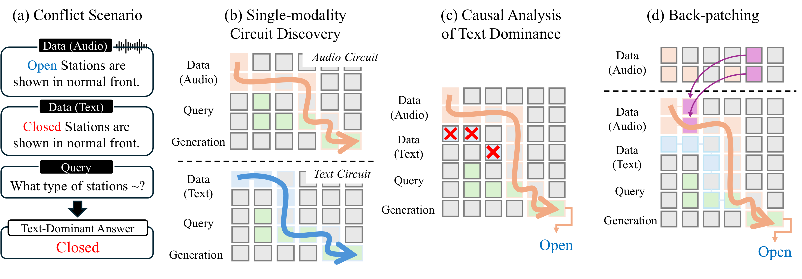

Text dominance is consistent
Across models and conflict types, predictions favor textual evidence over contradictory audio.
EMNLP 2026 · Mechanistic Interpretability
Korea Advanced Institute of Science and Technology (KAIST)
EMNLP 2026 Main
TL;DR
When audio and text conflict, Audio LLMs usually follow text.
The audio is not erased—it is actively suppressed, and back-patching can restore its influence without training.

Motivation
Audio LLMs combine sound and text, but what happens when those inputs directly contradict each other?
Across controlled conflicts, representative models consistently lean toward the textual statement—even when the acoustic evidence says otherwise.
Mechanistic Findings
Across models and conflict types, predictions favor textual evidence over contradictory audio.
Text and audio begin on distinct functional pathways, then converge into a shared semantic space in deeper layers.
The acoustic representation remains recoverable. The text circuit actively suppresses its influence on the answer.
Closed-set A/B evaluation averaged across adjective, negation, number, and time conflicts.
Higher means the model follows the audio rather than the contradictory text.
Average audio-consistent accuracy across four conflict types.
Removing the text circuit reveals that acoustic information is still recoverable.
Question
Answer
Back-patching takes audio representations from late layers and injects them into earlier layers, amplifying acoustic evidence before text can suppress it.
Average audio-choice accuracy under conflict
Citation
@inproceedings{cho-etal-2026-wins,
title = {Who Wins the Conflict? Mechanistic Interpretability of Text Bias in Audio {LLM}s},
author = {Cho, Hyebin and Yoo, Suho and Jang, Jaehyuk and Kim, Changick and Chung, Joon Son},
booktitle = {Proceedings of the 2026 Conference on Empirical Methods in Natural Language Processing},
year = {2026},
pages = {47781--47799},
doi = {10.18653/2026.emnlp-main.2099}
}